Для мого улюбленого дідуся ПДФ
Виконавши інструкцію нижче, ти зможеш:
- Створити таку веб‑сторінку
- Розмістити її безкоштовно на GitHub Pages
- Мати веб-сторінку, яку інші зможуть побачити в інтернеті
Завантаження часу…
Завантаження погоди…
Докладна інструкція:
-
Підготуй обліковий запис GitHub
- Перейди на ➜ github.com (сайт відкриється у новій вкладинці твого браузера якщо ти натиснеш на посилання ліворуч).
- Натисни кнопку Sign up у верхньому правому куті.
- Введи e‑mail, створи пароль, ім'я користувача (англійською), обери країну та натисни Create account.
Це приклад як я створював акаунт, в тебе буде інший email, username, та інше:
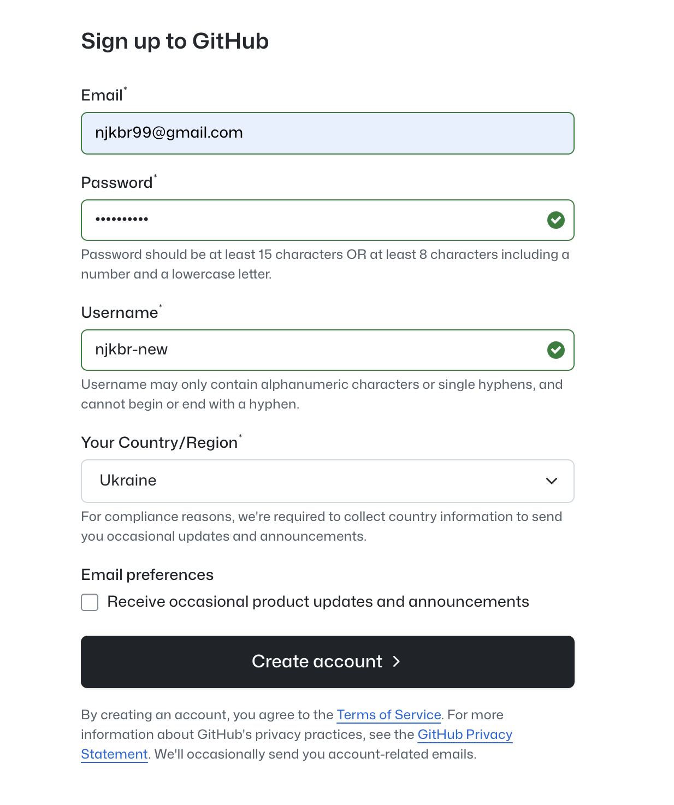 - Тебе попросять ввести код, який ти отримаєш на свій email:
- Введи код, який тобі прислали
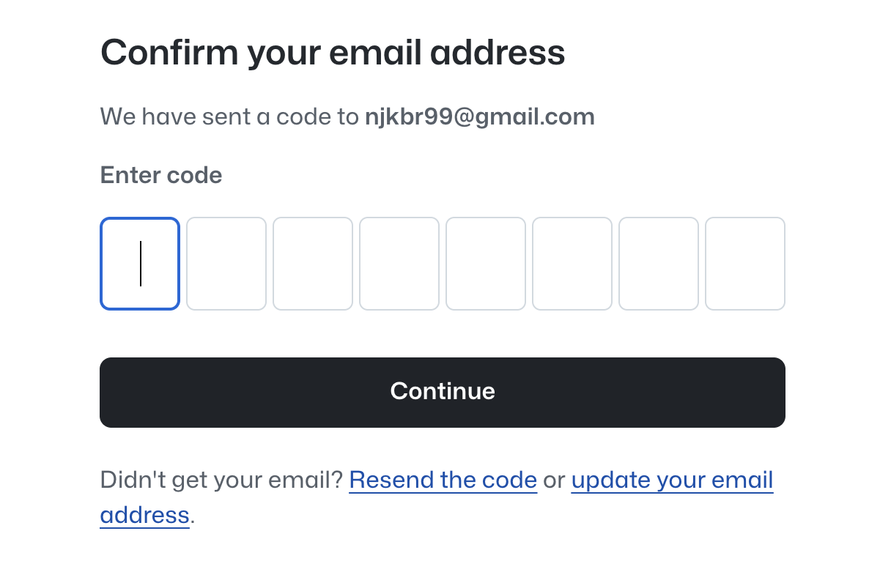 - Тебе попросять авторизуватись з тим email і паролем, який ти використав щоб створити акаунт:
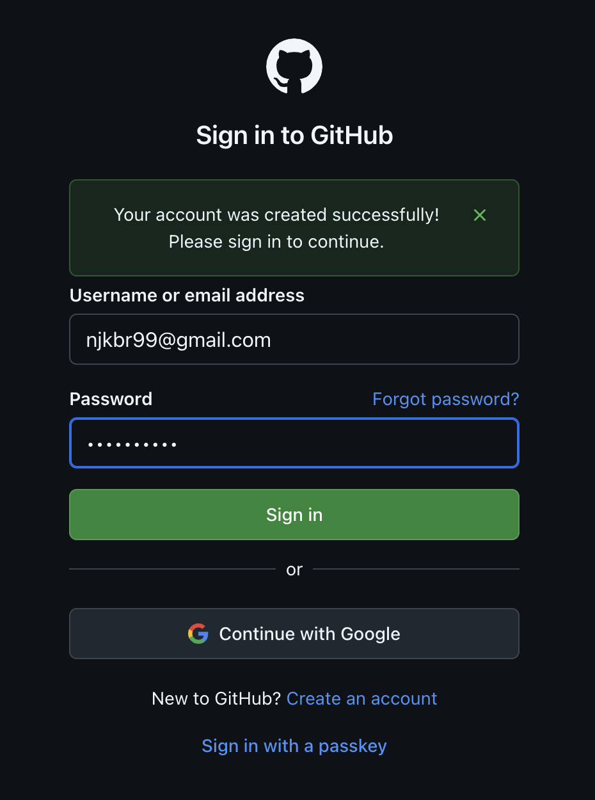
-
Створи новий репозиторій (місце де будуть зберігатися твої файли) для сторінки
- У верхній панелі GitHub натисни піктограму
+➜ New repository (верхній правий кут).
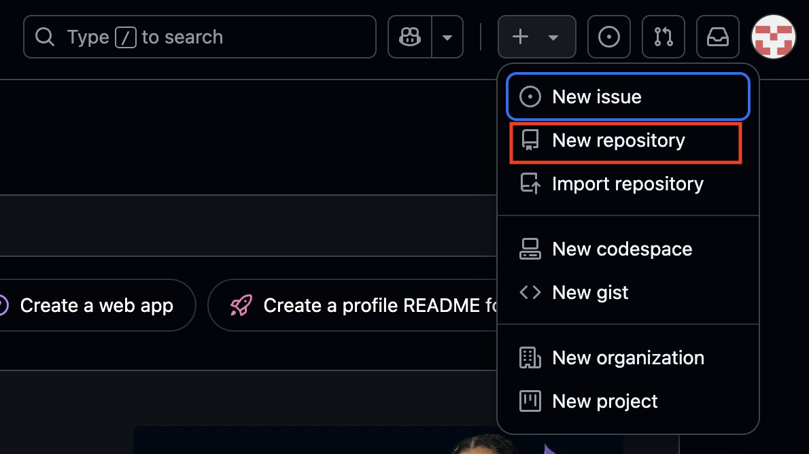 - У полі Repository name введи назву репозиторію, можеш придумати сам, або написати
<simple-page>
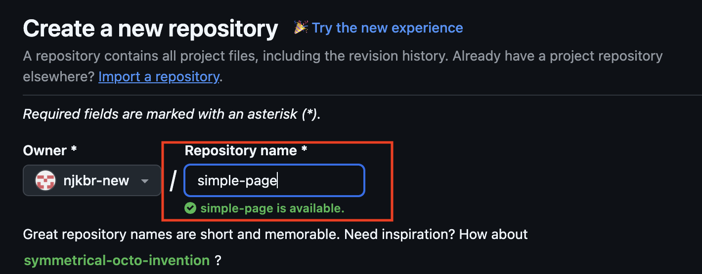 - Переконайся, що вибрано радіокнопку Public.
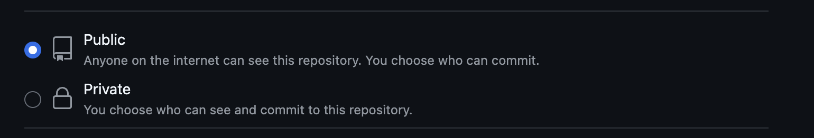 - Натисни Create repository.
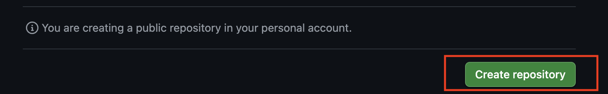
- У верхній панелі GitHub натисни піктограму
-
Додай файл
index.html- Відкрий сторінку свого проєкту.
- Натисни на іконку меню у верхньому лівому куті.
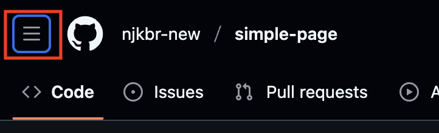 - Натисни на назву свого проєкету.
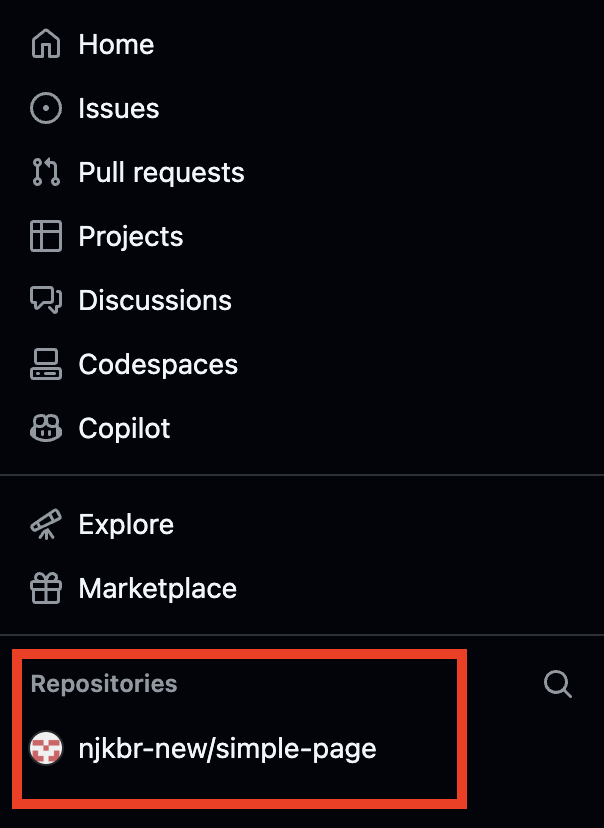
- Натисни на іконку меню у верхньому лівому куті.
- На сторінці нового репозиторію натисни посилання creating new file.
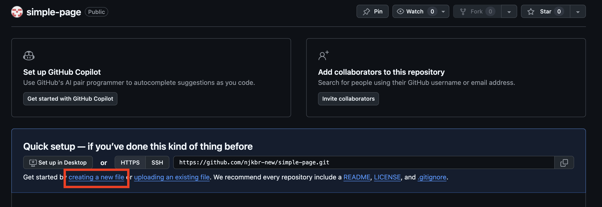 - У полі file name введи
index.html. - Напиши будь-який текст.
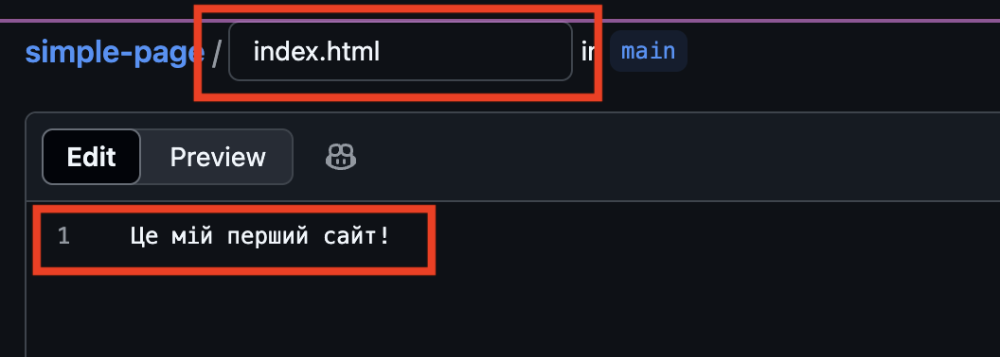 - У правій частині екрану буде зелена кнопка Commit changes... - натисни її.
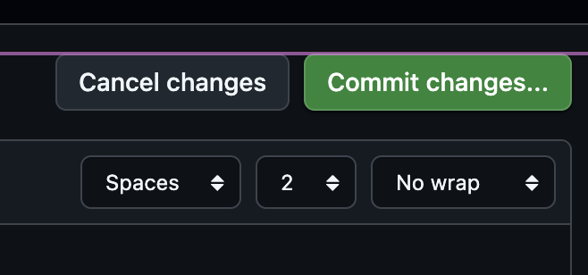 - Натисни Commit changes у вікні яке зʼявиться.
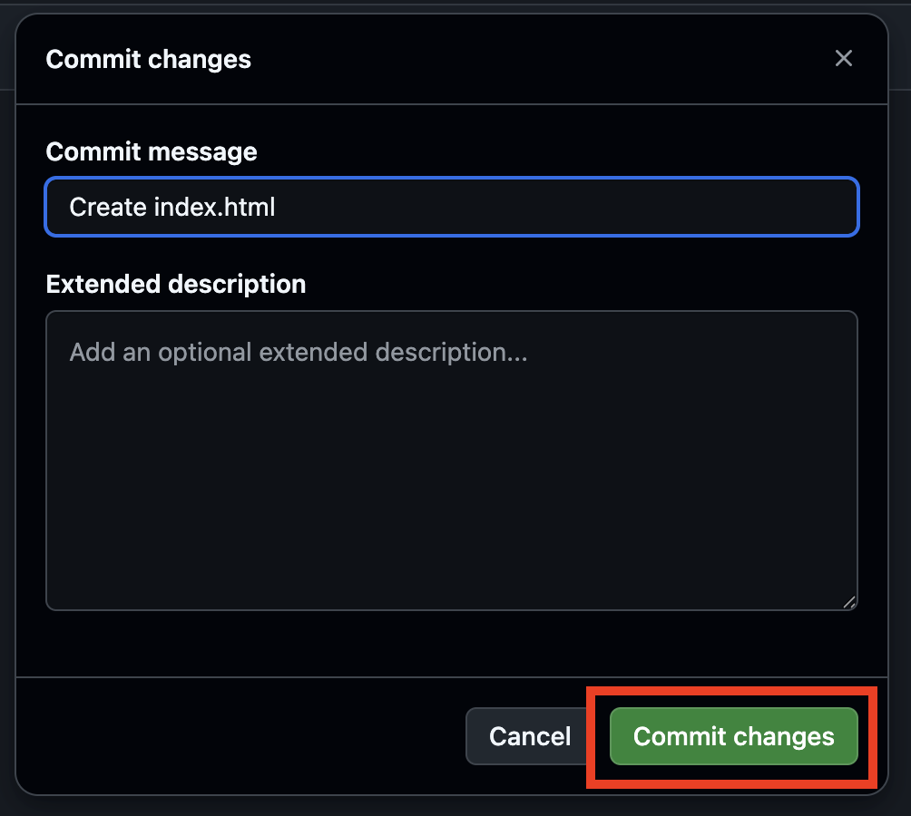
- Відкрий сторінку свого проєкту.
-
Увімкни GitHub Pages
- Перейди на вкладку Settings (праворуч, під назвою репозиторію).
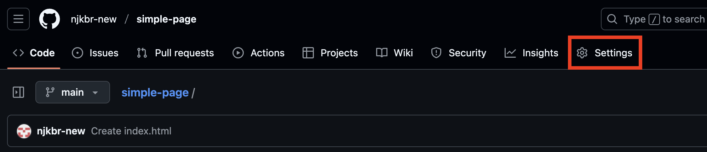 - У лівому меню прокрути униз і натисни Pages.

- У секції Build and deployment → Source вибери:
- Deploy from a branch.
- Branch =
main. - Folder =
/ (root).
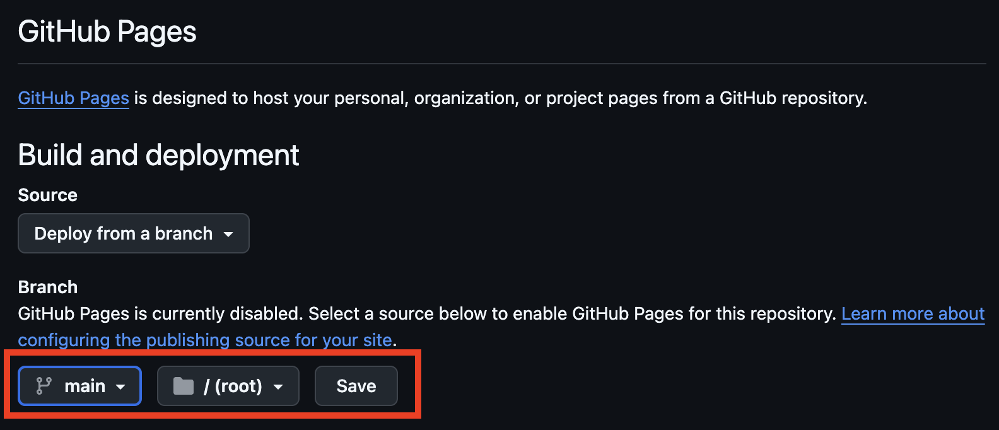 - Зачекай 5 хвилин.
- Перезавантаж сторінку.
- Вище з'явиться плашка: «Your site is live at …». Натисни на посилання.
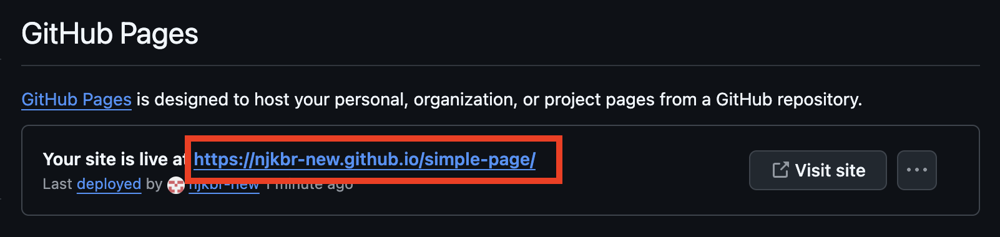
- Перейди на вкладку Settings (праворуч, під назвою репозиторію).
-
Перевір сторінку
- Через 30‑120 секунд має з'явитися твоя сторінка з текстом, який ти додав.
-
Корисні поради
- Якщо бачиш 404, зачекай ще хвилину та онови сторінку з Ctrl + F5.
- Щоб змінити вміст, редагуй
index.htmlу репозиторії й тисни Commit changes — оновлення з'являться автоматично.